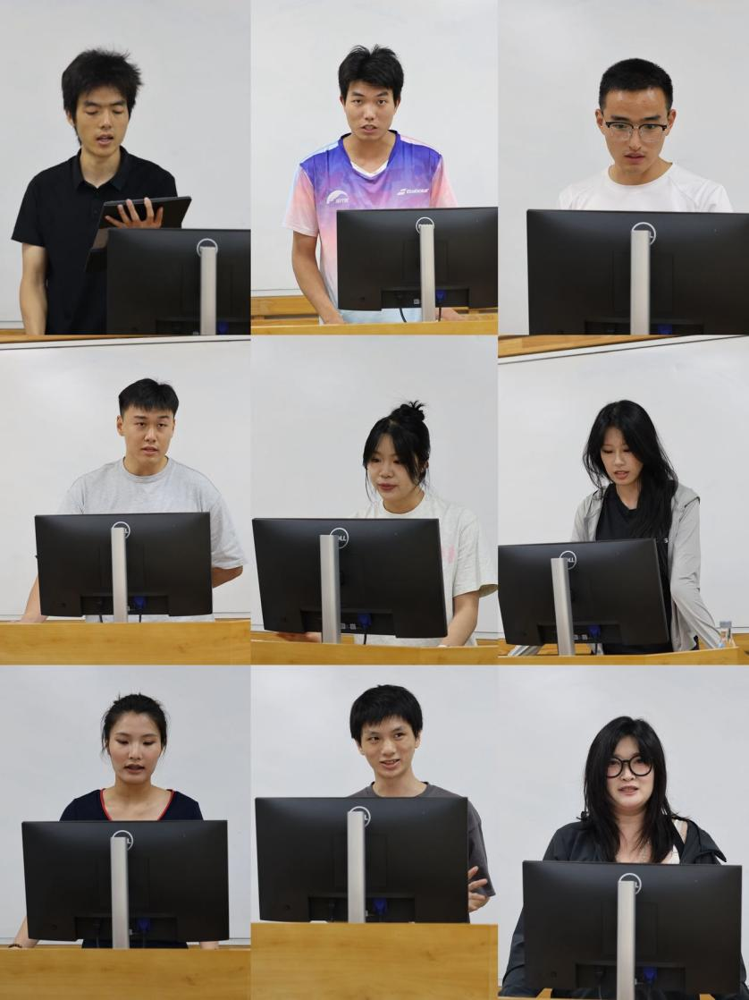

学生会 · 教学通知
2026年体育学院分团委研究生会换届大会成功举办
发布时间：2026-06-09
6月5日，四川大学体育学院2025-2026届分团委研究生会述职暨2026-2027届换届选举大会，在望江校区基础教学楼顺利举行。 2025 - 2026届分团委研究生会 主席谢正伟主持会议，分团委书记兼学生科科长周湉出席会议。 主席团成员及各中心负责人结合岗位职责和工作实际 ， 围绕组织建设、宣传服务、体育活动、实践创新、文化艺术、学术交流、外联协作等方面进行述职汇报。大家在总结工作成效的同时，也对存在的问题与今后的改进方向进行了梳理，展现了研究生会成员认真负责、务实进取的工作态度。 随后，换届选举工作有序开展 ， 候选人依次进行发言，围绕个人经历、岗位认识和未来规划等内容作出汇报。 根据 相关章程与规定，秉持公平、公正、公开原则，经民主投票、 规范 计票 ，最终产生了202 6- 202 7 届 分 团委研究生会主席团及各 中心负责人 ： 戴东明宇当选副书记，欧阳礼婧当选主席，李姝欣、杨雨晴当选副主席， 孙薇当选综合组织中心主任，黄 国翔 当选宣传媒体中心主任，李玟当选体育运动中心主任，向璟轩当选实践创就中心主任，吴雨衡当选文化艺术中心主任，刘俐伶当选学术交流中心主任，黄锐当选外联国际中心主任。 此次大会的成功举办，不仅是对过去工作的总结与传承，也为体育学院分团委研究生会注入了新的活力。新一届学生骨干将继续秉持服务同学、团结协作、务实创新的工作理念，不断提升组织凝聚力和服务水平，为学院研究生工作高质量发展贡献青春力量。 供稿来源： 学生科 文字：黄国翔 图片：戴东明宇 校编：夏维鲜 审核：李姗姗 贠琰 姚曦 柯志飞
